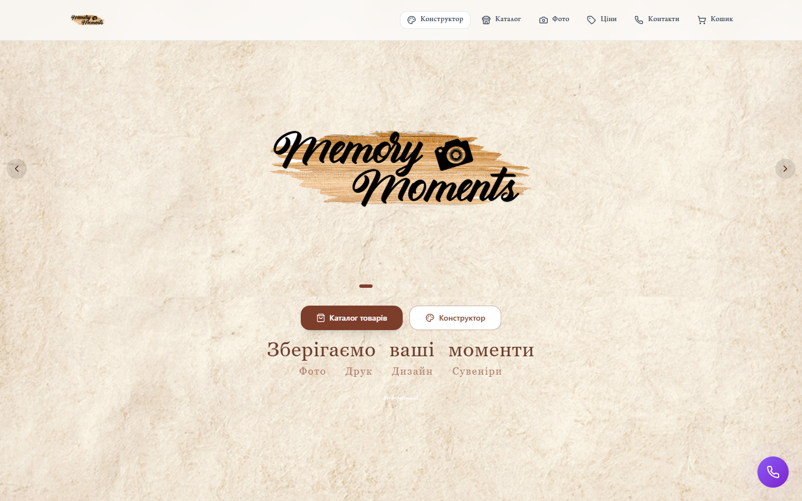
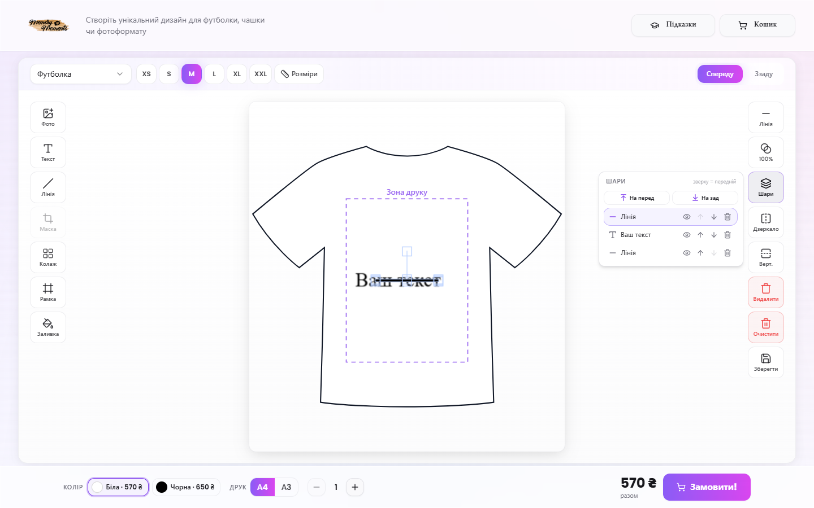
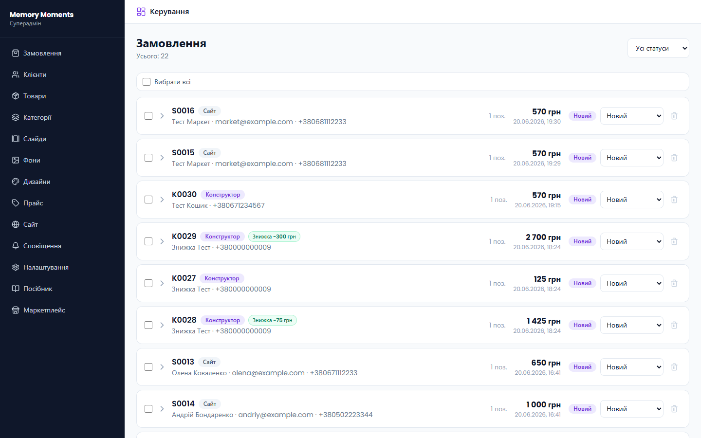
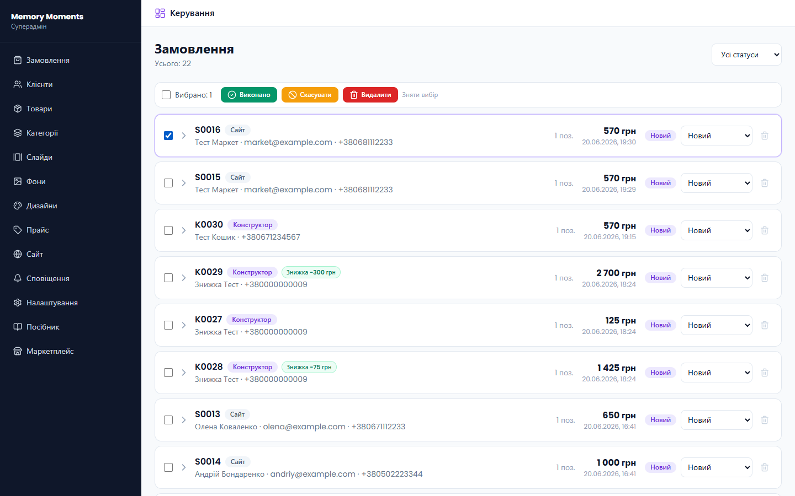
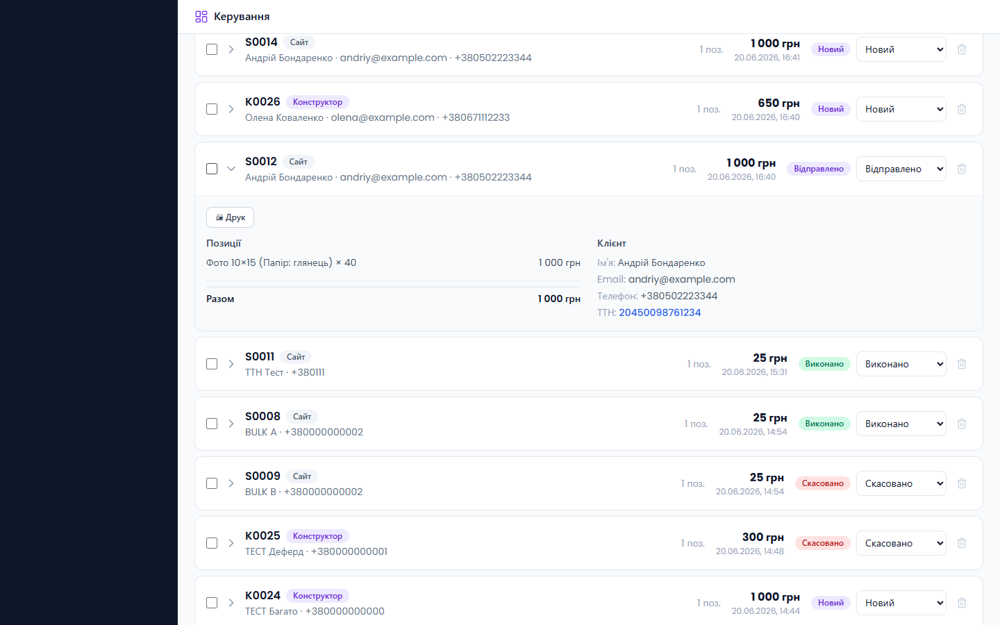
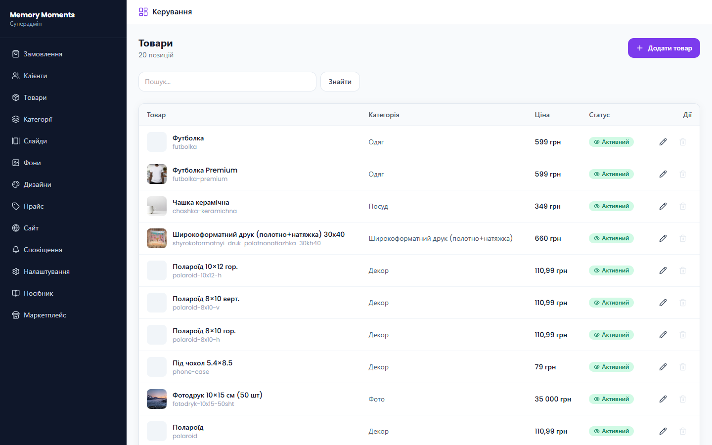
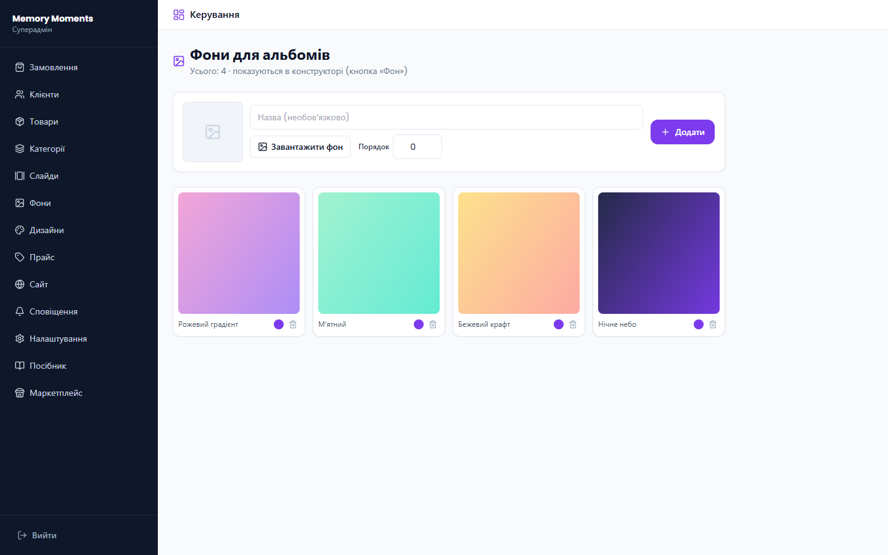
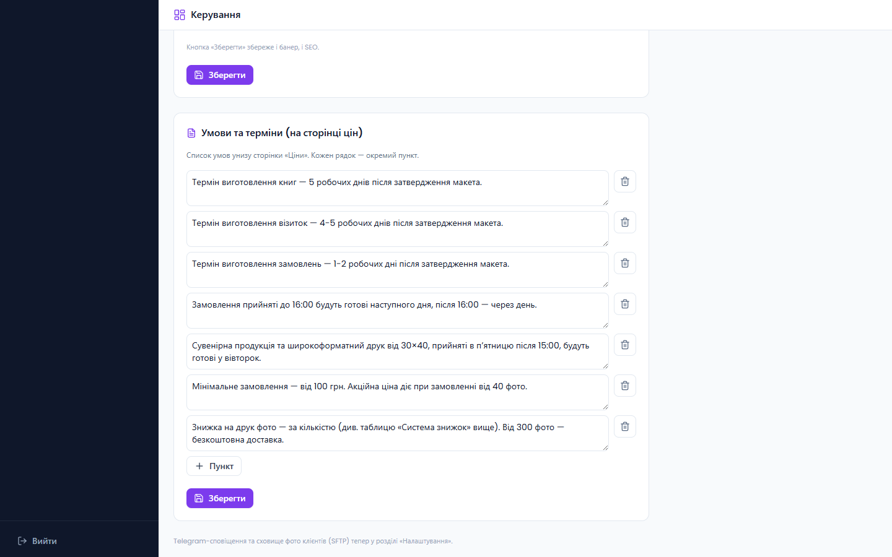
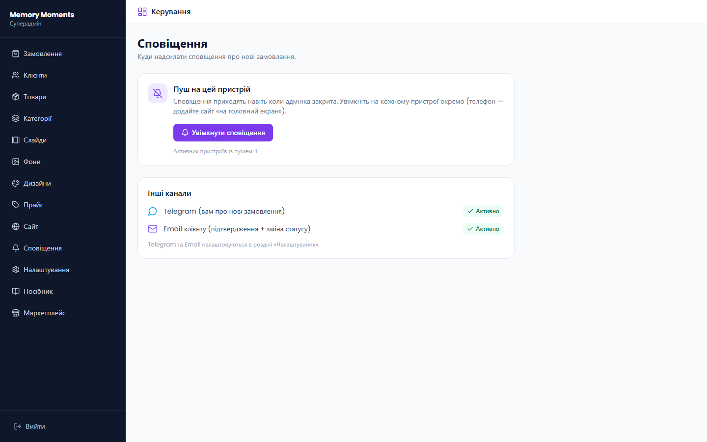
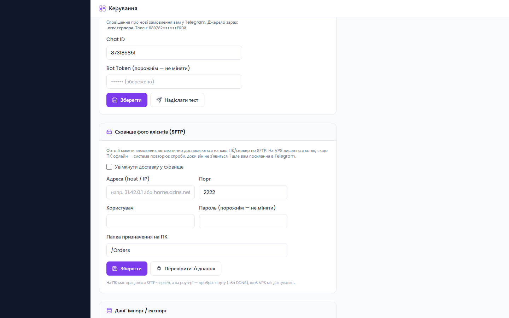

Memory Moments складається з трьох частин, що працюють разом.
Частина
Що це
Маркетплейс memory-moments.online
Вітрина-сайт: категорії товарів, ціни, контакти, кошик і оформлення. Те, що бачить клієнт.
Конструктор /designer
Онлайн-редактор: клієнт додає фото, текст, рамки, колажі на футболку, чашку, фото-формат чи фотокнигу — і одразу бачить ціну.
Адмін-панель /admin
Керування: замовлення, клієнти, товари, ціни, банери, сповіщення й налаштування. Те, що бачите ви.
Загальна схема замовлення
Коли клієнт оформлює замовлення (на сайті або в конструкторі), система автоматично:
зберігає замовлення в адмінці;
надсилає вам сповіщення в Telegram та push у браузер;
надсилає клієнту email-підтвердження;
доставляє фото/макети на ваш ПК (через SFTP), а якщо ПК вимкнено — присилає вам захищене посилання на завантаження.

Головна сторінка маркетплейсу (вітрина для клієнта)
2. Конструктор (дизайнер)
2.1 Загальний вигляд
Робоча область конструктора поділена на зони:
Зверху — вибір товару, розміри/опції, перемикач «Спереду / Ззаду».
Ліва панель — інструменти додавання (фото, текст, рамки тощо).
По центру — макет товару (полотно). На десктопі заповнює екран.
Права панель — властивості вибраного обʼєкта (прозорість, шари, дзеркало…).
Знизу — колір/формат, кількість, ціна в реальному часі та кнопка Замовити!
Конструктор: ліва панель інструментів, полотно, права панель властивостей, нижня панель замовлення
Підказки. Кнопка «Підказки» у шапці запускає інтерактивний тур по конструктору — зручно показати новому співробітнику.
2.2 Вибір товару та розмірів
У лівому верхньому куті — список товарів (Футболка, Чашка, Фотодрук, Полотно, Slim/Print Book та ін.). Поряд зʼявляються відповідні опції: розміри футболки, формат фотокниги, тип паперу тощо. Кнопка «Розміри» показує таблицю розмірів.
2.3 Інструменти (ліва панель)
Інструмент
Призначення
Фото
Завантажити зображення (або перетягнути на полотно). Для друку — оригінал у високій якості.
Текст
Додати напис. Шрифт, колір, розмір — у панелі тексту над полотном.
Лінія
Додати лінію/розділювач.
Маска
Обрізати фото за формою (коло, серце тощо).
Колаж
Готові розкладки на кілька фото. Натисніть комірку (+) і додайте фото; його можна рухати всередині комірки.
Рамка
20 декоративних рамок. Рамка завжди лишається поверх фото.
Заливка
Однотонний фон-заливка макета.
Фон(для альбомів)
Готові фони для фотокниг (керуються з адмінки). Лягають нижнім шаром на весь формат.
2.4 Властивості обʼєкта (права панель)
Зʼявляються, коли обрано обʼєкт на макеті:
Стиль — обведення/тінь/колір (залежно від обʼєкта).
Прозорість — повзунок 0–100%.
Шари — повна панель шарів (див. 2.5).
Дзеркало / Верт. — віддзеркалити по горизонталі/вертикалі.
Видалити / Очистити — прибрати обʼєкт / очистити весь макет.
Зберегти — зберегти поточний дизайн.
2.5 Панель «Шари»
Кнопка «Шари» відкриває список усіх обʼєктів макета (зверху — передній план). Для кожного шару:
Клік по рядку — зробити шар активним;
👁 — показати/сховати;
↑ / ↓ — підняти/опустити в порядку;
🗑 — видалити;
«На перед / На зад» — швидко перемістити вибраний шар.
Важливо. Керувати на макеті (рухати, масштабувати) можна лише активним шаром. Решта обʼєктів тимчасово «заблоковані», тож при накладанні фото ви не схопите випадково чужий елемент. Щоб перемкнутись — клікніть інший шар у панелі або пусте місце на полотні.

Панель «Шари»: список обʼєктів, показ/сховати, порядок, видалення; активний шар підсвічено
2.6 Фотокниги та «багато фото»
Для Slim Book / Print Book зʼявляються: вибір формату, кількість розворотів/листів і кнопка «Фото розворотів» (масове завантаження). Під полотном — карусель розворотів: мініатюри, які можна перетягувати, щоб змінити порядок; клік перемикає редагування. Кнопка «Передперегляд» показує книгу розворотами.
Для фото-форматів є режим «Багато фото»: завантажуєте пачку — кожне фото стає окремою редагованою сторінкою, ціна рахується за кількістю.
Унизу — ціна в реальному часі (залежить від товару, кольору, формату, кількості, знижок). Кнопка Замовити! додає дизайн у кошик і відкриває оформлення. Під час підготовки великих замовлень (напр. 200 фото) на кнопці видно прогрес «Готуємо N/N…», а під час відправки на сервер — відсоток вивантаження.
3. Адмін-панель
3.1 Вхід
Адмінка — за адресою /admin. Вхід за email і паролем. Ролі: суперадмін (повний доступ) та адмін (доступ за дозволами, які ви налаштовуєте).
3.2 Замовлення
Список усіх замовлень із фільтром за статусом. Для кожного: номер, джерело (Конструктор/Сайт), клієнт, сума, дата, статус.

Розділ «Замовлення»: список, статуси, перемикач статусу та кошик видалення
Статуси
НовийОплаченоВідправленоВиконаноСкасовано. При зміні статусу клієнту автоматично йде email (див. 4.2).
Відправлено — відкриється вікно для номера ТТН (Нова Пошта). Клієнт отримає його в листі з кнопкою «Відстежити».
Скасовано — відкриється вікно для причини, яку клієнт побачить у листі.
Масові дії
Позначте кілька замовлень галочками (або «Вибрати всі») — зʼявиться панель: Виконано, Скасувати, Видалити (видалення — лише суперадмін, без листа клієнту).

Масові дії: відмітьте замовлення → «Виконано / Скасувати / Видалити»
Деталі замовлення
Клік по стрілці розгортає замовлення: позиції з прев'ю, файли для друку, дані клієнта, ТТН, статус доставки фото на ПК, кнопки «Друк», «Скачати всі фото (ZIP)» та (для фотокниг) «Архів книги».

Деталі замовлення: статус доставки, друк, завантаження фото/макетів, ТТН
3.3 Клієнти
База клієнтів збирається автоматично із замовлень (імʼя, телефон, email). Зручно для повторних звернень і розсилок.
3.4 Товари, Категорії, Прайс
Товари — картки товарів вітрини (назва, фото, ціна, категорія). Категорії — розділи каталогу (редаговані плитки-іконки). Прайс — повний прайс послуг (фотодрук, поліграфія, широкоформат, сувеніри, фотокниги), з якого конструктор бере ціни.

ТовариПрайс послуг
Excel. У «Налаштуваннях» є імпорт/експорт прайсу, категорій і товарів у форматі Excel (.xlsx). Імпорт лише оновлює й додає — нічого не видаляє, тож ціни конструктора не зламаються.
3.5 Слайди та Фони
Слайди — банери-каруселі на головній. Фони — готові фони для фотокниг, які зʼявляються в конструкторі під кнопкою «Фон» (завантажте зображення, назву, увімкніть).

«Фони»: готові фони альбомів для конструктора
3.6 Дизайни
Бібліотека готових дизайнів/шаблонів, які можна пропонувати клієнтам.
3.7 Сайт
Бізнес-налаштування вітрини без участі розробника:
Контакти та філії — телефон, Instagram, Telegram, адреси, години роботи.
Доставка — способи (Нова Пошта / самовивіз) і відділення.
Знижки на фотодрук — пороги «від N фото → −X%».
Головний банер і SEO — заголовок, підпис, опис сайту.
Умови та терміни — список умов унизу сторінки цін (додавати/редагувати рядки).

«Сайт» → «Умови та терміни»: редагований список умов для сторінки цін
3.8 Сповіщення
Тут вмикається push на пристрій — сповіщення про нові замовлення приходять, навіть коли адмінка закрита. Натисніть «Увімкнути сповіщення» на кожному пристрої (на телефоні — додайте сайт «на головний екран»). Нижче — статус каналів Telegram та Email.

«Сповіщення»: push на пристрій + статус каналів
3.9 Налаштування
Технічні налаштування (для суперадміна):
Профіль / Пароль — ваш email і зміна пароля.
Користувачі адмінки — додати співробітника та налаштувати йому дозволи (перегляд/керування по розділах).
Email / SMTP — пошта, з якої йдуть листи клієнтам. Без неї листи не надсилаються.
Telegram-сповіщення — Chat ID і токен бота; кнопка «Надіслати тест».
Очистка сховища — видалення старих файлів друку для звільнення місця.

«Налаштування»: Telegram-сповіщення та сховище фото клієнтів (SFTP)
4. Як працює система (потоки)
4.1 Нове замовлення
Клієнт оформлює замовлення в конструкторі або на сайті.
Сервер зберігає його та миттєво відповідає клієнту (важкі файли пишуться у фоні, тож сторінка не «висить»).
Вам приходить сповіщення в Telegram і push.
Клієнту йде email-підтвердження.
Фото й макети доставляються на ваш ПК по SFTP.
4.2 Зміна статусу → лист клієнту
Статус
Що отримує клієнт
Оплачено
Лист «Оплату отримано».
Відправлено
Лист із номером ТТН і кнопкою «Відстежити посилку».
Виконано
Лист «Замовлення готове».
Скасовано
Лист «Замовлення скасовано» із причиною.
Видалення
Лист не надсилається.
Листи працюють, лише якщо налаштовано SMTP («Налаштування» → Email/SMTP).
4.3 Доставка фото на ПК (і запасний варіант)
Замовлення з фото автоматично доставляються на ваш ПК через SFTP. Якщо ПК вимкнено — система повторює спроби, доки він не зʼявиться, і один раз присилає вам у Telegram захищене посилання на завантаження ZIP з фото (прямо з нашого сервера). У деталях замовлення видно статус: Фото доставлено на ПК / у черзі / ПК офлайн — посилання надіслано.
4.4 Ціни та знижки
Ціни конструктора беруться з Прайсу. Знижки на фотодрук — за кількістю фото (налаштовуються в «Сайт» → «Знижки»); сервер застосовує найвищий поріг, що підходить.
5. Корисні поради
Не приходять листи клієнтам? Перевірте SMTP у «Налаштуваннях» (має бути «налаштовано»).
Не приходить push? Увімкніть його в «Сповіщеннях» на кожному пристрої; на телефоні — додайте сайт «на головний екран».
Фото не на ПК? Перевірте «Сховище (SFTP)» → «Перевірити зʼєднання». Якщо ПК офлайн — скористайтесь посиланням із Telegram або кнопкою «Скачати всі фото» в замовленні.
Хочете змінити ціни? Розділ «Прайс» або імпорт Excel у «Налаштуваннях».
Готові фони для альбомів додаються в «Фони» і зразу зʼявляються в конструкторі.
Текст/умови на сайті змінюються в «Сайт» без розробника.
Memory Moments · memory-moments.online · Цей посібник можна оновлювати разом із системою.